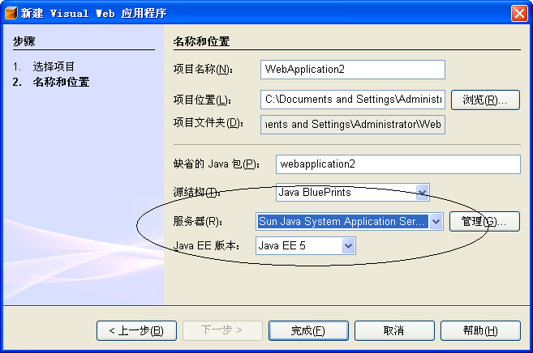

Visual Web Pack 可使用 NetBeans IDE 支持的所有应用服务器和 Servlet 容器。
Java EE 5/JavaServer Faces 1.2 限制
截止到目前为止，仅 Sun Java System Application Server 9 U1 (build 14) 或更高版本支持使用 Java EE 5 平台的 Visual Web 应用程序。如果您要使用其他服务器，则必须在创建项目时选择 J2EE 1.4 平台。
捆绑的 Travel 数据库
许多教程和样例应用程序都需要使用 Travel 数据库。如果在安装 Visual Web Pack 之前为 IDE 提供了可用的 Sun Java System Application Server，则 Visual Web Pack 安装会将 Travel 数据库添加到与 Sun Java System Application Server 捆绑在一起的 Java DB (Derby) 服务器中。如果在安装 Visual Web Pack 之后为 IDE 提供了可用的 Sun Java System Application Server，则必须重新启动 IDE 才能启用 Travel 数据库。有关将 Travel 数据库安装到您自己安装的 Java DB 或 Apache Derby 数据库服务器的说明，请参见“配置信息”部分的 Visual Web Pack 样例数据库。
技术预览
如果您已安装了 NetBeans Visual Web Pack 5.5 的技术预览版本，则在安装 Visual Web Pack 的产品发行版本之前，您必须按照卸载软件中所述卸载它。
如果已将 Blueprints Ajax 组件安装到 NetBeans Visual Web Pack 5.5 技术预览版本，则在安装 Visual Web Pack 的产品发行版本之前，必须手动卸载这些组件。从 IDE 中删除组件库：
如果未安装 JDK 5.0 Update 6 或更高版本，则无法执行此安装。您可以从 Java SE 下载页中下载此 JDK。
请注意，Mac OS X 安装需要 Java 2 Standard Edition (J2SE) 5.0 Release 4。您可以从 Apple 下载页中下载此 JDK。请搜索 "J2SE" 以查找此发行版本。
Netbeans IDE 支持的某个应用服务器或 Servlet 容器。
注意：要使用 Java EE 5 平台开发 Visual Web 应用程序，您必须使用 Sun Java System Application Server 9。有关详细信息，请参见 Java EE 下载 Web 站点。
安装顺序
如果要在 NetBeans IDE 中安装 NetBeans Visual Web Pack，但是单独安装了 Sun Java System Application Server，则在安装 Visual Web Pack 之前最好先配置 Sun Java System Application Server，这样才能立即使用捆绑的 Travel 数据库。如果在安装 Visual Web Pack 之后配置了应用服务器，则必须重新启动 IDE，然后才能在“运行环境”窗口中使用 Travel 数据库。
注意：如果您已安装了 Sun Java System Application Server，则在安装 Visual Web Pack 之前，请按照配置 Sun Java System Application Server 所述在 NetBeans IDE 中配置应用服务器，以便安装程序能够在服务器的捆绑 Java DB 数据库中安装样例 Travel 架构。请注意虽然 Visual Web Pack 不需要任何应用服务器，但您需要将 Visual Web Pack 项目部署到应用服务器上。
重要说明：如果您已安装了 NetBeans Visual Web Pack 5.5 的技术预览版本，则在安装 Visual Web Pack 的产品发行版本之前，您必须按照卸载软件中所述卸载它。
Microsoft Windows
以下是在 Microsoft Windows 平台上安装 NetBeans Visual Web Pack 5.5 的说明。
如果安装的 NetBeans IDE 与 Sun Java System Application Server 捆绑在一起，则已在 IDE 中注册了该应用服务器，您不需要对其进行配置了。如果单独下载并安装了 Sun Java System Application Server，则必须为 IDE 配置可用的应用服务器。最好在安装 Visual Web Pack 之前配置该服务器。
配置单独安装的服务器：
安装 NetBeans IDE 和 Sun Java System Application Server 后，启动 IDE。
在“运行环境”窗口中，右键单击“服务器”节点，然后从弹出式菜单中选择“添加服务器”。
在“添加服务器实例”向导中，从“服务器”下拉列表中选择 "Sun Java System Application Server"，然后单击“下一步”。
在安装 Visual Web Pack 的过程中，将为与 Sun Java System Application Server 捆绑在一起的 Java DB 数据库提供样例 Travel 数据库，如下表所示。某些样例应用程序和教程需要使用 Travel 数据库。如果在安装 Visual Web Pack 之前为 IDE 配置使用了 Sun Java System Application Server，则可以直接在“运行环境”窗口中使用 Travel 数据库。如果在安装 Visual Web Pack 之后为 IDE 提供了可用的 Sun Java System Application Server，则必须重新启动 IDE，然后才会在“运行环境”窗口中显示 Travel 数据库。
样例数据库
连接详细信息
适用对象
Travel
DB URL：jdbc:derby://localhost:1527/travel 驱动程序：org.apache.derby.jdbc.ClientDriver 用户名：travel 口令：travel
某些教程和样例应用程序需要使用该数据库
注意：要将 Travel 数据库用于 Sun Java System Application Server 以外的服务器，您必须为该服务器提供 derbyclient.jar（如以下部分所述）。
如果不希望安装 Sun Java System Application Server，请完成以下步骤为 IDE 提供 Travel 数据库。
在创建 Visual Web 项目时，可以在“新建 Visual Web 应用程序”向导中为该项目设置服务器和 Java EE 版本，如下图所示：

图 1：“新建项目”向导
如果要使用 JavaServer Faces 1.2 组件，请将“Java EE 版本”设置为 Java EE 5。目前，Sun Java System Application Server 9 是唯一经过测试支持 Java EE 5 项目的服务器。Visual Web Pack 联机帮助主题“新建 Visual Web 应用程序向导”包含了有关创建新项目的设置的详细信息。
在每个 Visual Web Pack 教程开始时都将列出下表内容，其中显示了该教程使用的资源：
应用服务器
Sun Java System Application Server 9 Tomcat JBoss BEA WebLogic